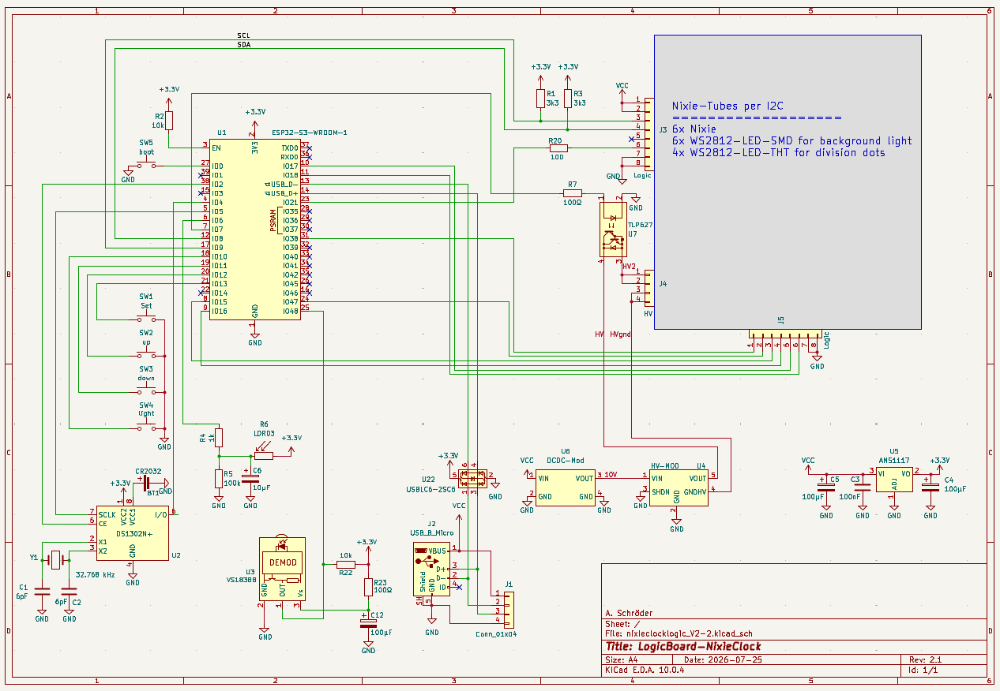
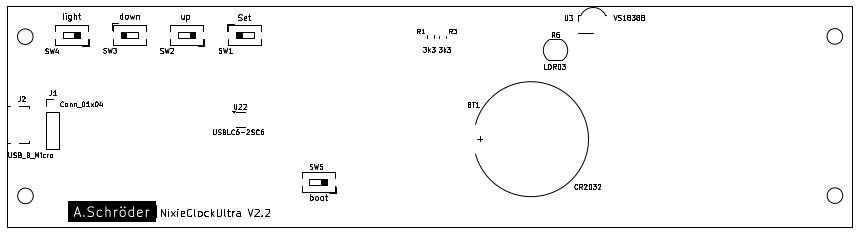
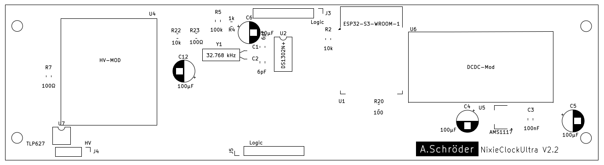
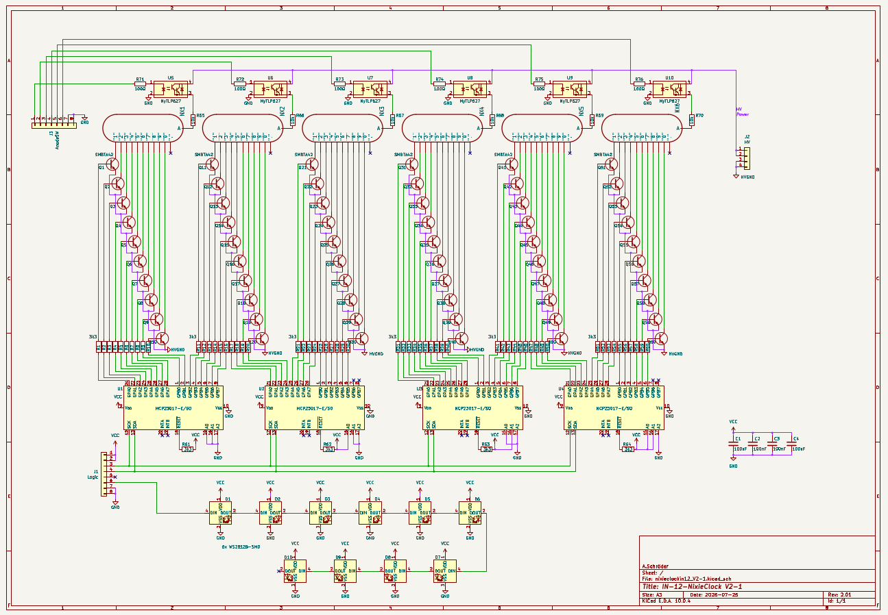
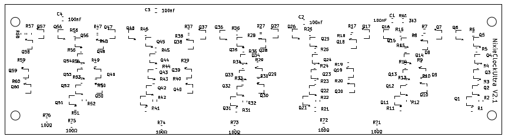
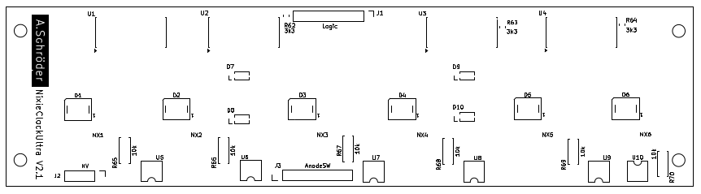

Aufbau & Hardware
Die Nixie Clock Ultra besteht aus zwei Platinen, die über zwei Steckverbinder verbunden sind: Das Logic Board beherbergt den Mikrocontroller, die Echtzeituhr und die Spannungsversorgung. Das Nixie Display Board enthält die Anzeigeelektronik mit vier MCP23017 Port-Expandern, 60 Hochvolt-Transistoren und den WS2812B RGB-LEDs.
Logic Board (Rev 2.2)

Schaltplan

PCB-Layout Oberseite

PCB-Layout Unterseite
Komponenten
Herzstück ist der ESP32-S3-WROOM-1 (U1) mit integriertem WLAN. Die batteriegepufferte DS1302 Echtzeituhr (U2) hält die Zeit auch bei Stromausfall. Der VS1838B (U3) empfängt und demoduliert IR-Signale.
Die Spannungsversorgung erfolgt dreistufig: AMS1117-3.3 (U5) liefert 3,3 V für die Logik; der DC-DC-Konverter (U6) hebt 5 V auf 10 V an; das HV-Modul (U4) erzeugt daraus ~170 V, die über einen TLP627-Optokoppler für den Nacht-Modus dimmbar an die Nixie-Anoden weitergegeben werden.
Neu in Rev 2.1: Lichtsensor-Anschluss J5 (LDR, GPIO6) für den automatischen Nacht-Modus. Neu ergänzt: TLP627-Optokoppler (GPIO7) dimmt die Anodenspannung per Hardware-PWM (2–60 %) — aktuell als Erweiterung handverdrahtet, noch nicht mit eigener Referenz im Schaltplan.
Nixie Display Board (Rev 2.01)

Schaltplan

PCB-Layout Oberseite

PCB-Layout Unterseite
Direct Drive — kein Ghosting
Vier MCP23017 I²C-Port-Expander (U1–U4, Adressen 0x20–0x23) stellen 64 digitale Ausgänge bereit. 60 davon steuern je einen SMBTA42-NPN-Transistor (300 V), der eine Nixie-Kathode direkt auf GND zieht.
Da jede Kathode ihren eigenen Transistor besitzt, können mehrere Röhren gleichzeitig leuchten — kein Multiplexing, keine gemeinsamen Pfade, kein Ghosting.
Sechs WS2812B-SMD-LEDs (Pixel 0–5, GRB) beleuchten die Röhren von hinten. Vier WS2812B-THT-LEDs YF923 (Pixel 6–9, RGB) dienen als Trennpunkt-LEDs.